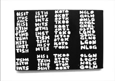

T.S.T.L.

Gheith Al-Amine – Libanon 2011 – 2 Min.
BetaSP – ohne Dialog
"T.S.T.L." spielt mit übertrieben intellektueller Konzeptkunst und versucht, deren Überholtsein mit Hilfe einer Leinwand, zwei Tuben Acrylfarbe (schwarz und weiß), einer menschlichen Stimme, einer Melodika, einer Taschentrompete, vielen sinnlosen Wörtern und einem selbstreferenziellen Satz aufzuzeigen. – Forum Expanded
Gheith Al-Amine, geboren 1973 in Beirut, Libanon, ist Videokünstler, Filmemacher, Radio-DJ und Kunstkritiker.